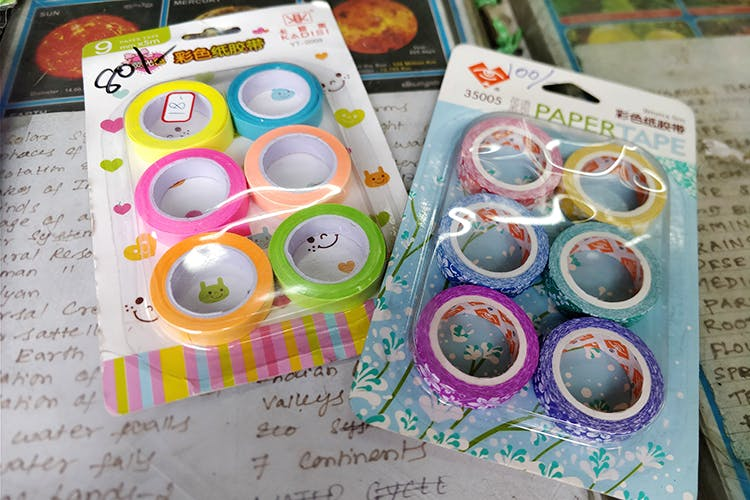
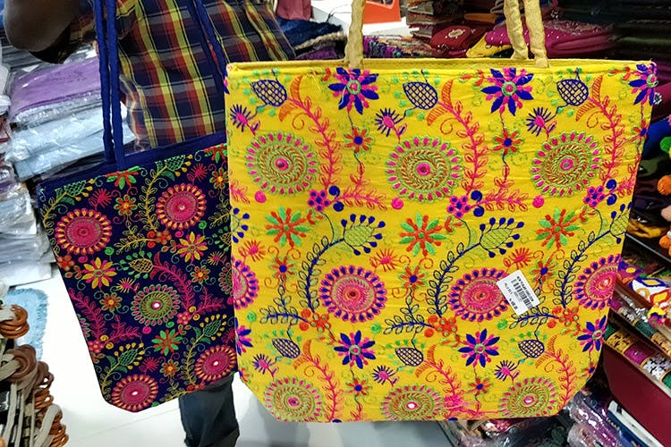

Quirky Kalamkari Fabrics At Kalanziam Tex

Find reams and reams of colourful fabric here at Kalanziam Tex.
+914424329036Open:9:30AM - 9:30PM
SAT Complex, 28, Pondy Bazaar, Ranganathan Street, Thyagaraya Nagar, Chennai
Bright Wallets From Kanchi Plaza

Don’t expect them to last long, but they’re definitely cute enough to add to your shopping agenda.
+914424342959Open:9:30AM - 10:00PM
kanchiplaza1234@gmail.com
Fancy Laces & Borders At Noori Lace House

At one of the turns, near the post office you’ll find a store that’s been around for over 50 years.Noori Lace House is a tiny store stocked with all kinds of lovely laces and borders to deck up an old boring saree. From simple ribbons to zari borders, get everything you want here.
+919841873312Open:9:00AM - 9:00PM
111/57, Pondy Bazaar, Thyagaraya Nagar, Chennai
Evil Eye Keychains & Dreamcatchers At Narayana Pearls

AGet these cool evil eye keychains, that cost around INR 200, with an animal of your choice attached to it. Peacock, dolphins, turtles or elephants — take your pick. They also have dream catchers in happy shades of pink, blue and purple. Way to spread some good aura all around!
+914442070809Open:10:00AM - 8:00PM
-helpdesk@narayanapearls.in || Address: 127, Pondy Bazaar, Thyagaraya Nagar, Chennai
Buy online @ narayanapearls
Gilton Footwear

So footwear is really hard to find at Pondy Bazaar. Yes, we know there are a gazillion shops but most of them have really gaudy shoes, which personally we’re not fans of. But we did find a pair of mojris at this shop — one even had a multicoloured front with pearls on it which looked quite funky. Haggle and try to bring the price down to about INR 300. Or less, if you’re an expert!
+914428184496Open:9:00AM - 10:00PM
81, Panagal Park, Sir Thyagaraya Road, Thyagaraya Nagar, Chennai
Three Star Fancy Corner Store
You can even find all kinds of other products to feed your stationery obsession. Don’t miss this little store.
+914424341361Open:9:00AM - 9:00PM
109/56, Pondy Bazaar, Thyagaraya Nagar, Chennai
New Punjab Handloom
Bright happy colours with pretty intricate threadwork, you can pair this with a simple monochrome kurta and the bag will happily stand out. They even have rugs, bedsheets and more.
+914442121360Open:9:00AM - 9:00PM
68, Pondi Bazaar, Thyagaraya Nagar, Chennai
Thread Bangles At Kumar Fancy

Match your kurta or saree with these pretty thread bangles (you even get other kinds) here for under INR 100. They even have trinkets, bits and bobs and more. You can also check out their funky terracotta earrings priced slightly higher at over INR 300
+919952921473Open:10:00AM - 10:00PM
44, Pondy Bazaar, Thyagaraya Nagar, Chennai